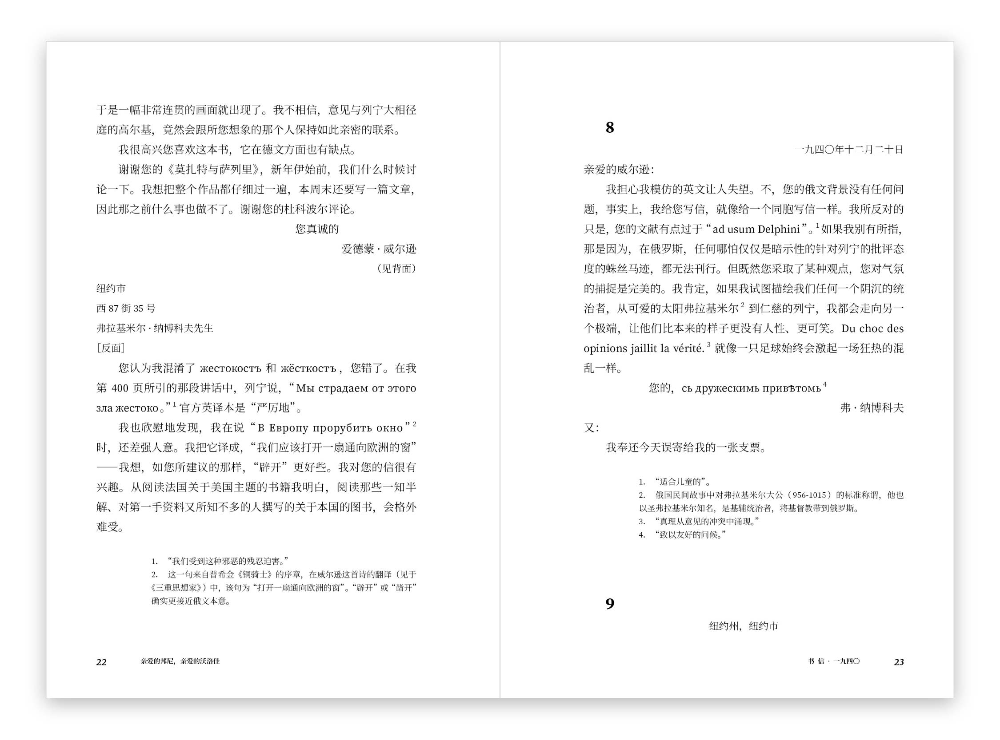
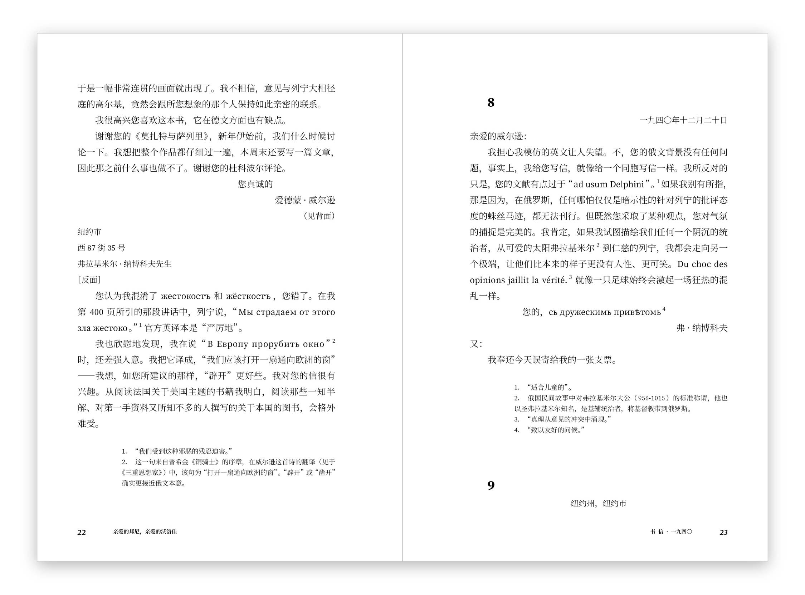

《亲爱的邦尼，亲爱的沃洛佳：纳博科夫—威尔逊通信集，1940—1971》（Dear Bunny, Dear Volodya: The Nabokov–Wilson Letters, 1940–1971）由上海译文出版社在2022年12月出版。
在本书的中文版的设计中，我参考英文原版的做法，尽量保留书信原有格式，同时又针对文本结构的特点，融入个人的独创性想法，完成了包括封面在内的整本书的设计。
下面和大家分享一下本书正文的排版设计思路。
一、宏观排版设计
在最初的方案中，我尝试了四栏的布局：正文占满四栏，注释占右侧三栏，信件的祝福语向右对齐到第三、四栏的边界。
其中，正文字号为10点，一行28个字（每栏7个字），注释字号为7.5点，一行恰好也是28个字。（正文和注释的字号比例为4:3，二者所占栏数之比也是4:3。）注释段首缩进4个字，宽度正好等于3个正文字。注释内的引文继续缩进4个字。
在与编辑讨论之后，得到反馈意见，称希望能减少页面的空白，以便节省版面。于是我做出相应的调整，反复修改几轮后确定了最终设计。
在最终方案中，正文一行增加到29个字，相当于在原有的四栏布局上向外扩展1个字。同时，注释一行增加到32个字，相当于在原有的三栏上向外扩展4个字（相当于正文3个字），注释的段首缩进改为常规的2个字。版心和边距也做了调整。原书页码与版心之间空1个字。
 

扉页、篇章页等也遵循上述网格系统。
二、微观排版设计
书籍的主要字体选用了思源宋体，该款字体字面饱满，中宫放松，大小字号都清晰易读。与之搭配的西文字体选择了Source Serif Pro。事实上，思源宋体自带的西文部分就是基于Source Serif Pro修改的，它加大了字形，调整了字重和粗细对比，减弱了部分斜线的角度，使其在与中文混排时能更和谐，但在单独排版西文时它的效果不如原生的Source Serif Pro。因为本书中有大量大段的拉丁字母、西里尔字母、希腊字母的文本，所以我选择将西文部分换为原生的Source Serif Pro字体。
书籍的第二字体选用了方正刻本仿宋，它的字形与灰度和思源宋体的搭配较好。并且，这个字体不像常见的仿宋体那样字面偏瘦长，这有助于在不额外调整字距的情况下保持良好的字距，有利于流畅阅读。
文本的标点间距设置得较为宽松，在一些通常采用密排的场合，仍然会稍稍增加字符间距。
正文中的注释上标经过专门调整，使其与后方文字的距离稍稍大于与前方文字（即被注释内容）的距离。
非注释的上标经过专门调整，使其与注释上标相比，大小稍大，高低偏低，避免与注释上标混淆。

三、尾声
虽然已经尽力关注每一个细节，但纵观最终成书，在排版上仍然难免存在一些失误。有些是我在设计时没考虑周到，有些是排版员在操作时的疏忽。好的设计不是靠一个人就能做到的，与书籍生产相关的每一个环节，比如字体设计、软件开发、排版设计、排版操作、编辑、校对、印刷、装订等等，都会影响到最终设计成品的质量。优秀的设计造物需要我们所有人共同的努力。